Een aantal mooie grafieken uit het goede data-analyseboek van Rafa Irizarri (Harvard University)
dslabs-pakket om van de werkelijkheid te lerenRafael Irizarri schreef een prachtig boek over moderne data analyse Introduction to Data Science. Data Analysis and Prediction Algorithms with R dat je gratis in boekdown formaat kunt inzien hier. Daar heb ik het al eens over gehad en daar zal ik vast op een later tijdstip nog wel weer eens op terugkomen. Dat boek komt voort uit diverse colleges die hij over dit onderwerp op de Harvard University heeft gegeven. Irizarri wil je van echte data laten leren en leert je zo hele verschillende technieken. Voor het gebruik van die data heeft hij een speciaal pakket gemaakt dat dslabs heet. Daarover heeft hijzelf eerder en Amy Hill later een post geschreven op Simply Statistics. Ik heb deze posts bewerkt om te laten zien hoe levensechte datasets eruit zien en hoe je deze data aantrekkelijk zichtbaar kunt maken. Misschien vooral ook wel om op zijn goede boek te wijzen.
Een veelbesproken onderwerp in het statistiekonderwijs is dat informatica-computatie een prominentere rol zou moeten spelen in het curriculum. Izigarri (en in alle bescheidenheid ik ook) is het daar volledig mee eens, maar hij denkt dat de belangrijkste verbetering zal komen van het op de voorgrond brengen van toepassingen en het zo goed mogelijk nabootsen van de uitdagingen waarmee de toegepaste statistici in het echte leven worden geconfronteerd. Izigarri probeert daarom het gebruik van veelgebruikte voorbeelden, zoals de -mtcarsdataset die in R zo vaak worden gebruikt, te vermijden wanneer hij les geeft in datawetenschap. Volgens hem is het niet zo eenvoudig om voorbeelden te vinden die zowel realistisch en interessant zijn als geschikt voor beginners. Na een paar jaar lesgeven heeft hij een aantal datasets verzameld die volgens hem wel aan deze criteria voldoen. Om het gebruik ervan in introductielessen te vergemakkelijken, heeft hij ze in het dslabs-pakket opgenomen. Dat pakket heb ikzelf al geinstalleerd (en daarom staat er een # voor). Als jij het wilt gebruiken, moet je het #-teken weghalen.
# install.packages("dslabs")Hieronder laat hij wat voorbeelden zien. Je kunt in ieder geval zien welke datasets in het pakket zitten:
library("dslabs")
data(package="dslabs")Merk op dat het pakket ook enkele van de scripts bevat die worden gebruikt om de gegevens uit hun oorspronkelijke bron te halen:
list.files(system.file("script", package = "dslabs"))
[1] "make-admissions.R"
[2] "make-brca.R"
[3] "make-brexit_polls.R"
[4] "make-death_prob.R"
[5] "make-divorce_margarine.R"
[6] "make-gapminder-rdas.R"
[7] "make-greenhouse_gases.R"
[8] "make-historic_co2.R"
[9] "make-mnist_27.R"
[10] "make-movielens.R"
[11] "make-murders-rda.R"
[12] "make-na_example-rda.R"
[13] "make-nyc_regents_scores.R"
[14] "make-olive.R"
[15] "make-outlier_example.R"
[16] "make-polls_2008.R"
[17] "make-polls_us_election_2016.R"
[18] "make-reported_heights-rda.R"
[19] "make-research_funding_rates.R"
[20] "make-stars.R"
[21] "make-temp_carbon.R"
[22] "make-tissue-gene-expression.R"
[23] "make-trump_tweets.R"
[24] "make-weekly_us_contagious_diseases.R"
[25] "save-gapminder-example-csv.R" In het boek Introduction to Data Science kun je zien hoe de datasets worden gebruikt. Hier volgt een kort inkijkje op het geheel.
Deze dataset bevat gegevens over moorden met wapens in de Verenigde Staten in 2012. Hij gebruikt deze dataset om de basis van het R-programma te introduceren.
data("murders")
library(tidyverse)
library(ggthemes)
library(ggrepel)
r <- murders %>%
summarize(pop=sum(population), tot=sum(total)) %>%
mutate(rate = tot/pop*10^6) %>% .$rate
ds_theme_set()
murders %>% ggplot(aes(x = population/10^6, y = total, label = abb)) +
geom_abline(intercept = log10(r), lty=2, col="darkgrey") +
geom_point(aes(color=region), size = 3) +
geom_text_repel() +
scale_x_log10() +
scale_y_log10() +
xlab("Populations in millions (log scale)") +
ylab("Total number of murders (log scale)") +
ggtitle("US Gun Murders in 2010") +
scale_color_discrete(name="Region") 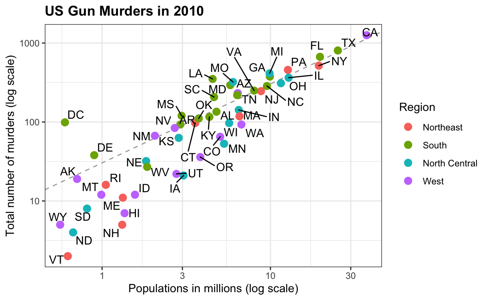
Over deze dataset heb ikzelf ook vaker geschreven. Deze dataset omvat de gezondheids- en inkomensresultaten van 184 landen van 1960 tot 2016. Het bevat ook twee karaktervectoren, de OESO en de OPEC, met de namen van de OESO- en OPEC-landen vanaf 2016. Hij gebruikt deze dataset om data visualisatie en ggplot2 te onderwijzen.
data("gapminder")
west <- c("Western Europe","Northern Europe","Southern Europe",
"Northern America","Australia and New Zealand")
gapminder <- gapminder %>%
mutate(group = case_when(
region %in% west ~ "The West",
region %in% c("Eastern Asia", "South-Eastern Asia") ~ "East Asia",
region %in% c("Caribbean", "Central America", "South America") ~ "Latin America",
continent == "Africa" & region != "Northern Africa" ~ "Sub-Saharan Africa",
TRUE ~ "Others"))
gapminder <- gapminder %>%
mutate(group = factor(group, levels = rev(c("Others", "Latin America", "East Asia","Sub-Saharan Africa", "The West"))))
filter(gapminder, year%in%c(1962, 2013) & !is.na(group) &
!is.na(fertility) & !is.na(life_expectancy)) %>%
mutate(population_in_millions = population/10^6) %>%
ggplot( aes(fertility, y=life_expectancy, col = group, size = population_in_millions)) +
geom_point(alpha = 0.8) +
guides(size=FALSE) +
theme(plot.title = element_blank(), legend.title = element_blank()) +
coord_cartesian(ylim = c(30, 85)) +
xlab("Fertility rate (births per woman)") +
ylab("Life Expectancy") +
geom_text(aes(x=7, y=82, label=year), cex=12, color="grey") +
facet_grid(. ~ year) +
theme(strip.background = element_blank(),
strip.text.x = element_blank(),
strip.text.y = element_blank(),
legend.position = "top")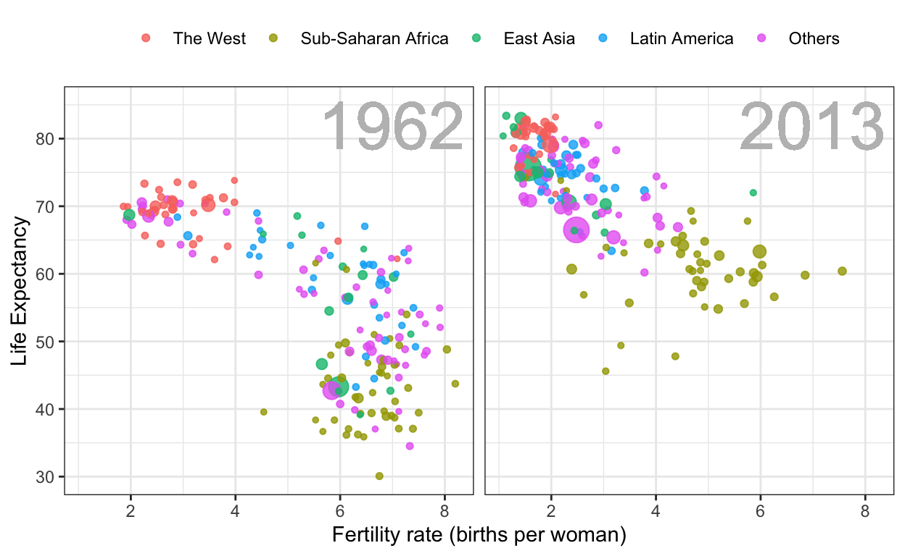
Deze dataset bevat jaarlijkse tellingen voor Hepatitis A, mazelen, bof, pertussis, polio, rodehond en pokken voor de Amerikaanse staten. Originele gegevens met dank aan Tycho Project. Hij gebruikt het om te laten zien hoe men meer dan 2 dimensies kan plotten.
library(RColorBrewer)
data("us_contagious_diseases")
the_disease <- "Measles"
us_contagious_diseases %>%
filter(!state%in%c("Hawaii","Alaska") & disease == the_disease) %>%
mutate(rate = count / population * 10000 * 52 / weeks_reporting) %>%
mutate(state = reorder(state, rate)) %>%
ggplot(aes(year, state, fill = rate)) +
geom_tile(color = "grey50") +
scale_x_continuous(expand=c(0,0)) +
scale_fill_gradientn(colors = brewer.pal(9, "Reds"), trans = "sqrt") +
geom_vline(xintercept=1963, col = "blue") +
theme_minimal() + theme(panel.grid = element_blank()) +
ggtitle(the_disease) +
ylab("") +
xlab("")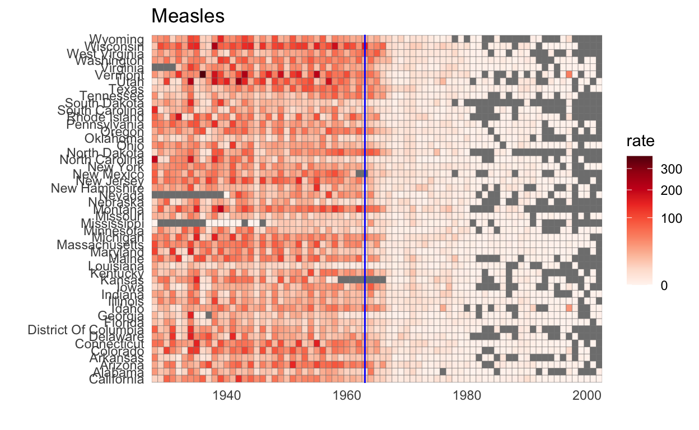
Deze gegevens omvatten de resultaten van de Amerikaanse presidentsverkiezingen van 2016, geaggregeerd door HuffPost Pollster, RealClearPolitics, stembureaus en nieuwsberichten. De dataset bevat ook de verkiezingsresultaten (volksstemming) en de stemmen van de kiescolleges in results_us_election_2016. Hij gebruikt deze dataset om les te geven over inferenties.
data(polls_us_election_2016)
polls_us_election_2016 %>%
filter(state == "U.S." & enddate>="2016-07-01") %>%
select(enddate, pollster, rawpoll_clinton, rawpoll_trump) %>%
rename(Clinton = rawpoll_clinton, Trump = rawpoll_trump) %>%
gather(candidate, percentage, -enddate, -pollster) %>%
mutate(candidate = factor(candidate, levels = c("Trump","Clinton")))%>%
group_by(pollster) %>%
filter(n()>=10) %>%
ungroup() %>%
ggplot(aes(enddate, percentage, color = candidate)) +
geom_point(show.legend = FALSE, alpha=0.4) +
geom_smooth(method = "loess", span = 0.15) +
scale_y_continuous(limits = c(30,50))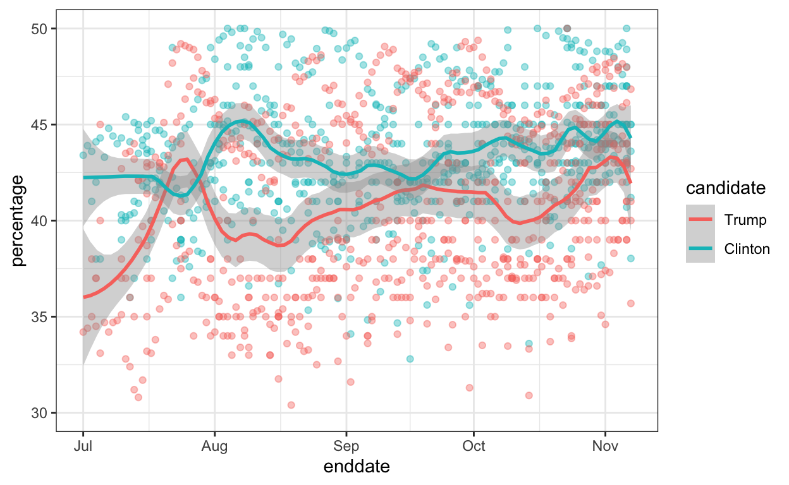
Dit zijn zelfgerapporteerde lengtes in inches voor mannen en vrouwen die de afgelopen jaren aan de cursus dataanalyse hebben meegedaan. Hij gebruikt ze voor het onderwijzen van distributies en samenvattende statistieken.
data("heights")
heights %>%
ggplot(aes(height, fill=sex)) +
geom_density(alpha = 0.2)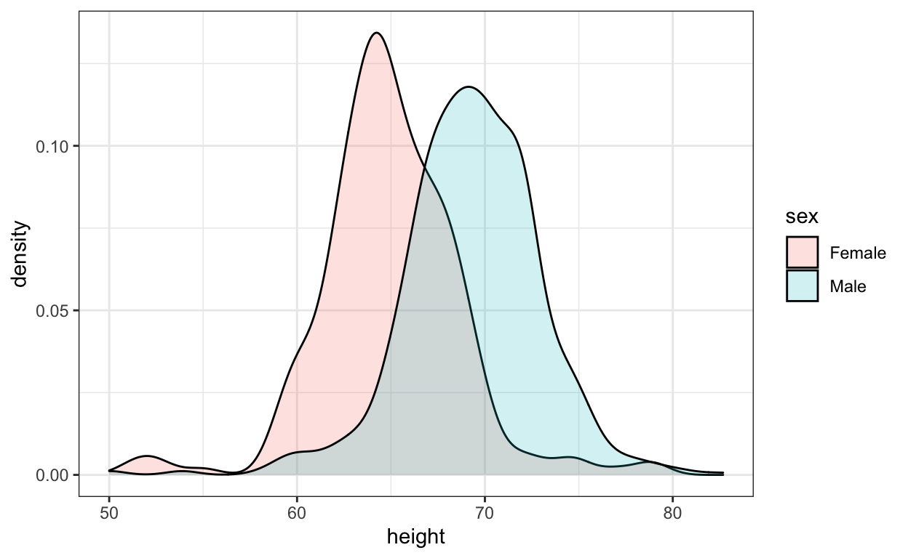
Deze data zijn behoorlijk aangepast omdat studenten lengte vaak in andere waarden dan inches rapporteren. De originele vormen staan hier:
data("reported_heights")
reported_heights %>% filter(is.na(as.numeric(height))) %>% select(height) %>% .$height
[1] "5' 4\"" "165cm"
[3] "5'7" ">9000"
[5] "5'7\"" "5'3\""
[7] "5 feet and 8.11 inches" "5'11"
[9] "5'9''" "5'10''"
[11] "5,3" "6'"
[13] "6,8" "5' 10"
[15] "Five foot eight inches" "5'5\""
[17] "5'2\"" "5,4"
[19] "5'3" "5'10''"
[21] "5'3''" "5'7''"
[23] "5'12" "2'33"
[25] "5'11" "5'3\""
[27] "5,8" "5'6''"
[29] "5'4" "1,70"
[31] "5'7.5''" "5'7.5''"
[33] "5'2\"" "5' 7.78\""
[35] "yyy" "5'5"
[37] "5'8" "5'6"
[39] "5 feet 7inches" "6*12"
[41] "5 .11" "5 11"
[43] "5'4" "5'8\""
[45] "5'5" "5'7"
[47] "5'6" "5'11\""
[49] "5'7\"" "5'7"
[51] "5'8" "5' 11\""
[53] "6'1\"" "69\""
[55] "5' 7\"" "5'10''"
[57] "5'10" "5'10"
[59] "5ft 9 inches" "5 ft 9 inches"
[61] "5'2" "5'11"
[63] "5'11''" "5'8\""
[65] "708,661" "5 feet 6 inches"
[67] "5'10''" "5'8"
[69] "6'3\"" "649,606"
[71] "728,346" "6 04"
[73] "5'9" "5'5''"
[75] "5'7\"" "6'4\""
[77] "5'4" "170 cm"
[79] "7,283,465" "5'6"
[81] "5'6" Ze gebruiken het vaak om het string proces en regex uit te leggen.
Tot slot is hier een gek voorbeeld van de website Spurious Correlations dat hij gebruikt als hij wil uitleggen dat correlatie niet te verwarren is met oorzaak.
the_title <- paste("Correlation =",
round(with(divorce_margarine,
cor(margarine_consumption_per_capita, divorce_rate_maine)),2))
data(divorce_margarine)
divorce_margarine %>%
ggplot(aes(margarine_consumption_per_capita, divorce_rate_maine)) +
geom_point(cex=3) +
geom_smooth(method = "lm") +
ggtitle(the_title) +
xlab("Margarine Consumption per Capita (lbs)") +
ylab("Divorce rate in Maine (per 1000)")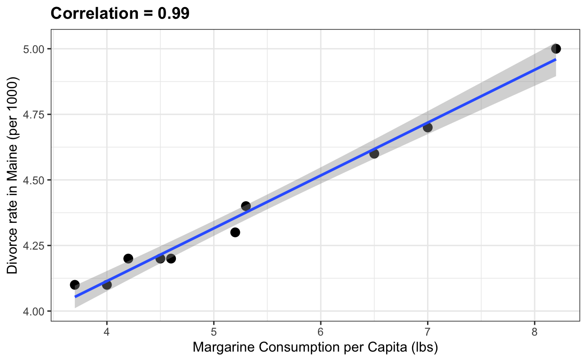
Ze hebben het dslabs-pakket, dat ze eerder introduceerden als een pakket met realistische, interessante en toegankelijke datasets die gebruikt kunnen worden in inleidende datawetenschappelijke cursussen, in 2019 uitgebreid. Deze nieuwe uitgave heeft nog eens zeven nieuwe datasets toegevoegd, met data over klimaatverandering, astronomie, levensverwachting en borstkankerdiagnose. Ze worden gebruikt in verbeterde probleemsets en nieuwe projecten binnen het HarvardX Data Science Professional Certificate Program, dat beginners R-programmering aanleert, maar ook laat werken met datavisualisatie, dataverwerking, statistiek en machine learning zonder dat ze een coderings- of programmeringsachtergrond hebben.
Het dslabs-pakket is al geinstalleerd. Om verder te gaan is het ook nodig om de volgende pakketten en opties te installeren.
if(!require("tidyverse")) install.packages("tidyverse")
if(!require("ggrepel")) install.packages("ggrepel")
if(!require("matrixStats")) install.packages("matrixStats")En daarna actief te maken:
# load libraries
library(tidyverse)
library(ggrepel)
library(matrixStats)Haal ook een kleurenpakket binnen als je wilt:
# set colorblind-friendly color palette
colorblind_palette <- c("black", "#E69F00", "#56B4E9", "#009E73",
"#CC79A7", "#F0E442", "#0072B2", "#D55E00")Drie datasets met betrekking tot klimaatverandering worden gebruikt om datavisualisatie en dataverwerking te leren. Deze gegevens leveren duidelijke plots op die een toename van de temperatuur, het broeikasgasniveau en de koolstofuitstoot van 800.000 jaar geleden tot de moderne tijd laten zien. Studenten kunnen hun eigen impactvolle visualisaties maken met echte atmosferische en ijskernmetingen.
De temp_carbon dataset bevat jaarlijkse globale temperatuurafwijkingen in graden Celsius ten opzichte van de 20e eeuwse gemiddelde temperatuur van 1880-2018. De temperatuurafwijkingen boven land en boven de oceaan worden ook gerapporteerd. Daarnaast zijn de jaarlijkse koolstofemissies (in miljoenen tonnen) van 1751-2014 opgenomen. De temperatuurafwijkingen zijn afkomstig van NOAA en de koolstofuitstoot van Boden et al., 2017 via CDIAC.
data(temp_carbon)
# line plot of annual global, land and ocean temperature anomalies since 1880
temp_carbon %>%
select(Year = year, Global = temp_anomaly, Land = land_anomaly, Ocean = ocean_anomaly) %>%
gather(Region, Temp_anomaly, Global:Ocean) %>%
ggplot(aes(Year, Temp_anomaly, col = Region)) +
geom_line(size = 1) +
geom_hline(aes(yintercept = 0), col = colorblind_palette[8], lty = 2) +
geom_label(aes(x = 2005, y = -.08), col = colorblind_palette[8],
label = "20th century mean", size = 4) +
ylab("Temperature anomaly (degrees C)") +
xlim(c(1880, 2018)) +
scale_color_manual(values = colorblind_palette) +
ggtitle("Temperature anomaly relative to 20th century mean, 1880-2018")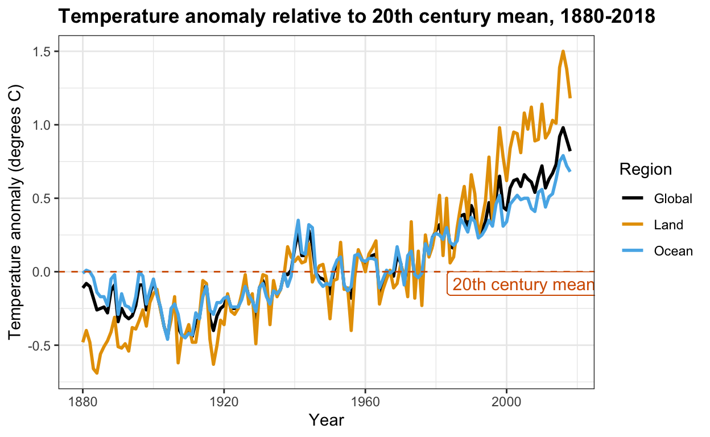
Het gegevensframe voor broeikasgassen bevat vanaf 0-2000 CE elke 20 jaar kooldioxide (CO2, ppm), methaan (CO2, ppb) en lachgas (N2O, ppb) concentraties. De gegevens zijn een subset van ijskernmetingen van MacFarling Meure et al., 2006 via NOAA. Er is een duidelijke toename van alle 3 de gassen vanaf het Industriële Revolutietijdperk.
data(greenhouse_gases)
# line plots of atmospheric concentrations of the three major greenhouse gases since 0 CE
greenhouse_gases %>%
ggplot(aes(year, concentration)) +
geom_line() +
facet_grid(gas ~ ., scales = "free") +
xlab("Year") +
ylab("Concentration (CH4/N2O ppb, CO2 ppm)") +
ggtitle("Atmospheric greenhouse gas concentration by year, 0-2000 CE")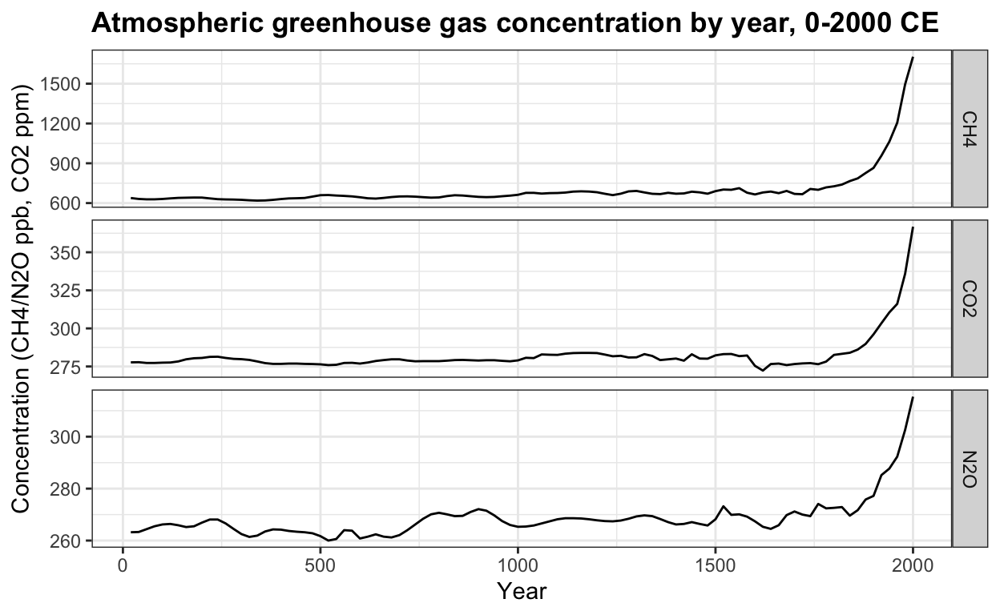
Vergelijk dit patroon met de door de mens veroorzaakte koolstofuitstoot sinds 1751 uit temp_carbon, die op vergelijkbare wijze is gestegen:
# line plot of anthropogenic carbon emissions over 250+ years
temp_carbon %>%
ggplot(aes(year, carbon_emissions)) +
geom_line() +
xlab("Year") +
ylab("Carbon emissions (metric tons)") +
ggtitle("Annual global carbon emissions, 1751-2014")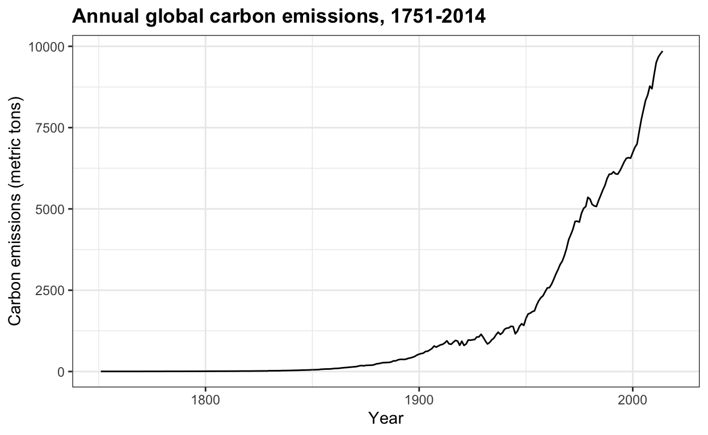
Een veelvoorkomend argument tegen het bestaan van antropogene klimaatveranderingen is dat de aarde van nature cycli van opwarming en afkoeling ondergaat die worden beheerst door natuurlijke veranderingen die buiten de macht van de mens liggen. CO2-niveaus van ijskernen en moderne atmosferische metingen in het Mauna Loa-observatorium tonen aan dat de snelheid en de omvang van natuurlijke variaties in broeikasgassen verbleken in vergelijking met de snelle veranderingen in de moderne industriële tijd. Terwijl de planeet in het verre verleden warmer was en hogere CO2-niveaus had (gegevens niet getoond), laat de huidige ongekende snelheid van verandering weinig tijd voor planetaire systemen om zich aan te passen.
data(historic_co2)
# line plot of atmospheric CO2 concentration over 800K years, colored by data source
historic_co2 %>%
ggplot(aes(year, co2, col = source)) +
geom_line() +
ylab("CO2 (ppm)") +
scale_color_manual(values = colorblind_palette[7:8]) +
ggtitle("Atmospheric CO2 concentration, -800,000 BCE to today")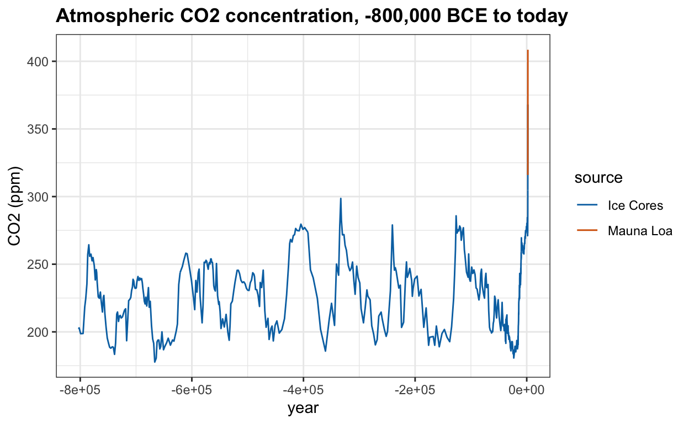
In de sterrenkunde worden sterren ingedeeld naar verschillende belangrijke kenmerken, waaronder temperatuur, spectrale klasse (kleur) en lichtkracht (helderheid). Een gemeenschappelijke plot voor het demonstreren van de verschillende groepen sterren en hun interpretaties is het Hertzsprung-Russell-diagram, of H-R-diagram. Het gegevensframe van de sterren verzamelt informatie voor het maken van een H-R-diagram met ongeveer 100 genoemde sterren, inclusief hun temperatuur, spectrale klasse en magnitude (die omgekeerd evenredig is met de lichtkracht).
Het H-R-diagram heeft de heetste, helderste sterren linksboven en de koudste, zwakste sterren rechtsonder. Hoofdreekssterren staan langs de hoofddiagonaal, terwijl reuzen rechtsboven staan en dwergen linksonder. Met deze gegevens kunnen verschillende aspecten van de datavisualisatie geoefend worden.
data(stars)
# H-R diagram color-coded by spectral class
stars %>%
mutate(type = factor(type, levels = c("O", "B", "DB", "A", "DA", "DF", "F", "G", "K", "M")),
star = ifelse(star %in% c("Sun", "Polaris", "Betelgeuse", "Deneb",
"Regulus", "*SiriusB", "Alnitak", "*ProximaCentauri"),
as.character(star), NA)) %>%
ggplot(aes(log10(temp), magnitude, col = type)) +
geom_point() +
geom_label_repel(aes(label = star)) +
scale_x_reverse() +
scale_y_reverse() +
xlab("Temperature (log10 degrees K)") +
ylab("Magnitude") +
labs(color = "Spectral class") +
ggtitle("H-R diagram of selected stars")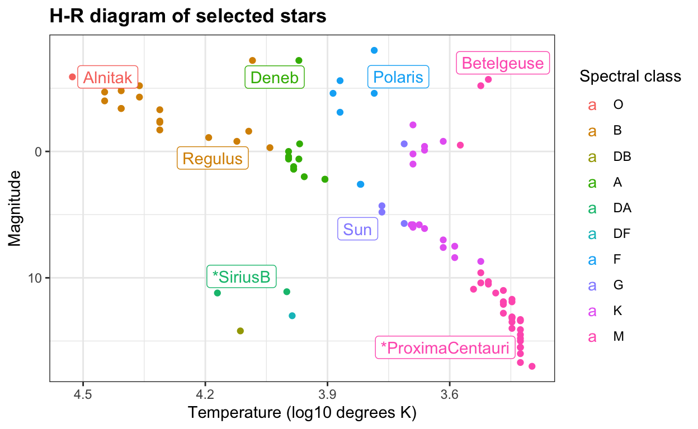
De levenstabel voor de periode 2015, die is verkregen van het Amerikaanse Ministerie Sociale zekerheid, vermeldt de kans op overlijden binnen een jaar op elke leeftijd en voor beide geslachten. Deze waarden worden vaak gebruikt om levensverzekeringspremies te berekenen. Ze kunnen worden gebruikt voor oefeningen over waarschijnlijkheid en willekeurige variabelen. De premies kunnen bijvoorbeeld worden berekend met een soortgelijke benadering als die welke wordt gebruikt voor de rentevoeten in de casestudie over The Big Short in Rafael Irizarry’s Introduction to Data Science-boek.
brexit_polls bevat stempercentages en verdelingen van de zes maanden voorafgaand aan het Brexit EU-lidmaatschapsreferendum in 2016 samengesteld uit Wikipedia. Deze kunnen worden gebruikt om een verscheidenheid aan inferentie- en modelleringsconcepten te oefenen, waaronder betrouwbaarheidsintervallen, p-waarden, hiërarchische modellen en voorspellingen.
data(brexit_polls)
# plot of Brexit referendum polling spread between "Remain" and "Leave" over time
brexit_polls %>%
ggplot(aes(enddate, spread, color = poll_type)) +
geom_hline(aes(yintercept = -.038, color = "Actual spread")) +
geom_smooth(method = "loess", span = 0.4) +
geom_point() +
scale_color_manual(values = colorblind_palette[1:3]) +
xlab("Poll end date (2016)") +
ylab("Spread (Proportion Remain - Proportion Leave)") +
labs(color = "Poll type") +
ggtitle("Spread of Brexit referendum online and telephone polls")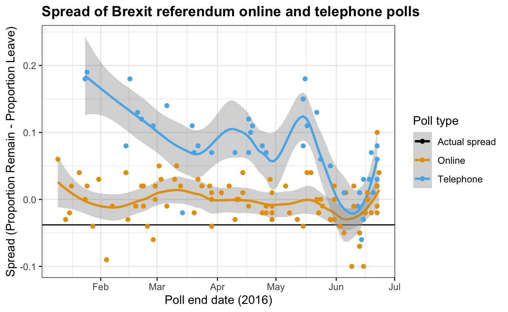
# Borstkanker diagnose voorspelling: brca
Dit is de Breast Cancer Wisconsin (Diagnostic) Dataset, een klassieke dataset voor machine learning die classificatie mogelijk maakt van borstlaesie biopsies als kwaadaardig of goedaardig op basis van celkernkenmerken geëxtraheerd uit gedigitaliseerde beelden van fijne naald aspiratie cytologie dia’s. De gegevens zijn geschikt voor de analyse van de belangrijkste componenten en een verscheidenheid aan algoritmen voor machinaal leren. De modellen kunnen worden getraind tot een voorspellende nauwkeurigheid van meer dan 95%.
# scale x values
x_centered <- sweep(brca$x, 2, colMeans(brca$x))
x_scaled <- sweep(x_centered, 2, colSds(brca$x), FUN = "/")
# principal component analysis
pca <- prcomp(x_scaled)
# scatterplot of PC2 versus PC1 with an ellipse to show the cluster regions
data.frame(pca$x[,1:2], type = ifelse(brca$y == "B", "Benign", "Malignant")) %>%
ggplot(aes(PC1, PC2, color = type)) +
geom_point() +
stat_ellipse() +
ggtitle("PCA separates breast biospies into benign and malignant clusters")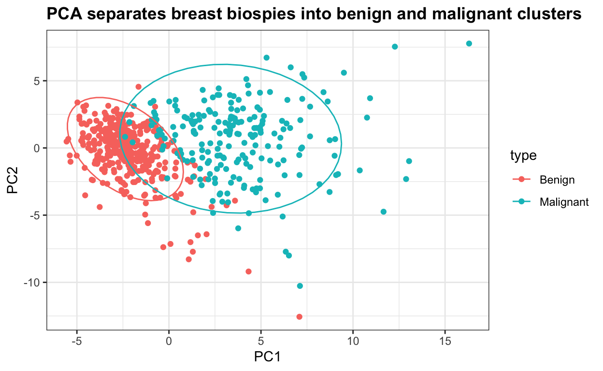
De datasets in het dslabs-pkket maken data science onderwijs bruikbaarder door echte en wereldse casestudies en met motiverende voorbeelden.
Is programmeren in R nieuw voor jou en wil je dit leren? Check dan het Data Science Professional Certificaat Programma van Harvard University, onder leiding van Rafael Irizarry!